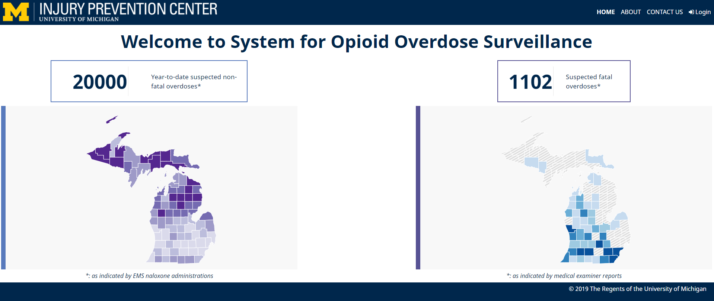

System for Opioid Overdose Surveillance (SOS) Dashboard
Tracking Opioid Overdose Cases in Michigan
May 2019 - May 2020

check out my demo version of the SOS Dashboard (optimized for desktop).(Please use the login username: steph and password: choi)
About the SOS Dashboard:
The SOS Dashboard provides policy makers and healthcare advocates a way to visually track where opioid cases take place in Michigan. It uses data from several sources to provide real-time information. The dashboard itself uses maps, tables, and charts to display different case demographics.
The production version of this dashboard is not accessible to the general public due to data privacy and use agreements. You can check out the landing pages though!
What I did:
Website Design (HTML/CSS/JS, Python - Flask)
-
Designed all pages of the website using Boostrap and Flask.
- I designed all of the pages and their general layouts using Bootstrap due to its ease of use, good documentation, and straightforward layout.
- The website uses Flask to pass different county and region names to the dashboard, which then renders the data of the correct region. Using Flask also allowed for the implementation of a login system and more templating. Due to time constraints, I wasn't able to actually implement any extensive templating beyond displaying variables using Flask.
- There were specific limitations for the design of the production-ready dashboard contents that were difficult to navigate around. The contents were to be printer-friendly; when printed, the dashboard must fit within one or two letter-sized documents. Keeping this in mind, data visualizations, which were often SVGs that had limited scaling, had to be compact. For the design, I tried to prioritize the visibility of the labels, which would give the user enough context to navigate the document.
-
Use of recognizable colors to keep with brand identity.
- I used primarity University of Michigan colors to keep with our brand as a tool created by the University of Michigan.
- Because many users reported the need to print the dashboard contents, I tried to keep the colors on the printer-friendly view of the dashboard contrasted, and limited the use of color when possible.